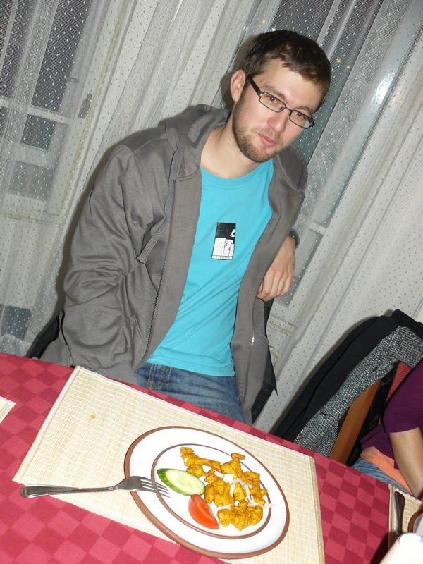
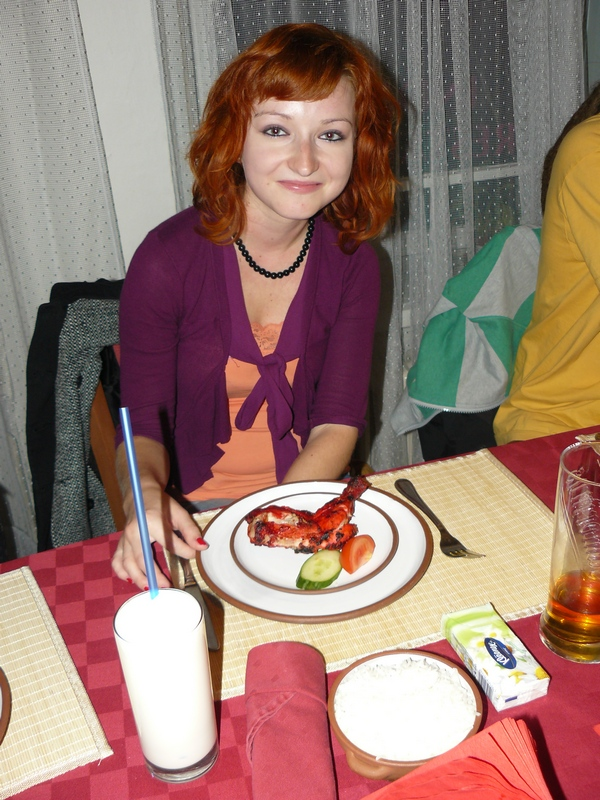
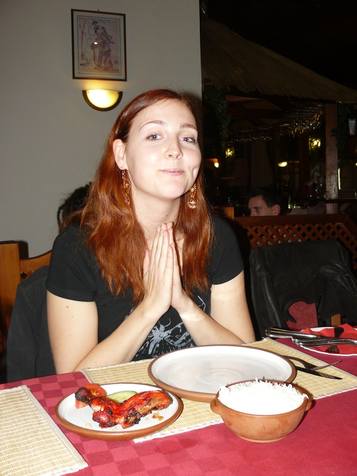
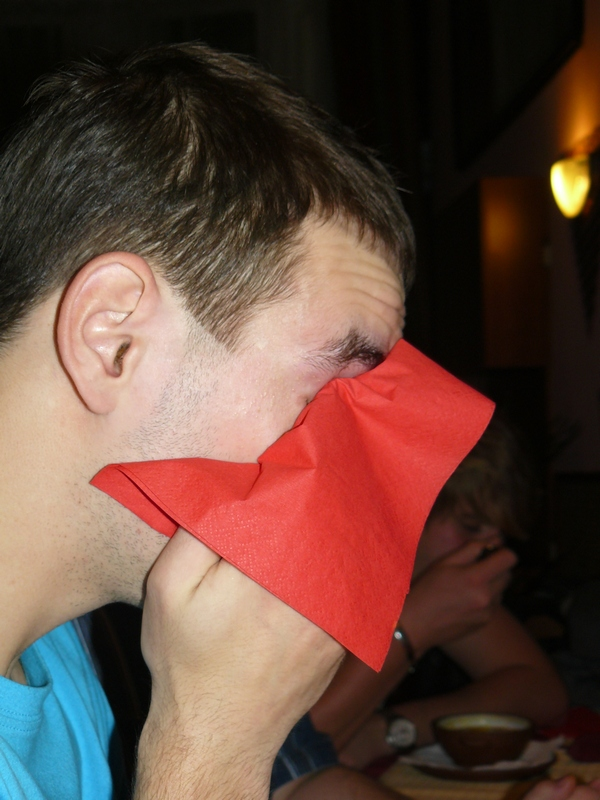

Čtvrteční návštěva indické restaurace TAJ mě inspirovala k založení nové gurmánské rubriky, do které bych chtěla psát něco jako krátké “recenze” na (především) brněnské podniky, kavárny, hospody atd., které jsem navštívila a které bych mohla doporučit i vám. S návrhem “gurmánských čtvrtků” přišel Žánek a hned na úvod jsme začali pěkně “zvostra” a vyrazili do asi nejznámější indické restaurace v Brně s názvem TAJ :-)… TAJ najdete přímo v centru Brna na ulici Běhounská (kousek od Veselé Vačice) a určitě ho nepřehlédnete. Restaurace se nachází v patře a je docela hezky a stylově zařízená. Tentokrát jsme s Péťou výjimečně někam přišli včas a trochu trapně jsme se usadili k obrovskému stolu, který byl pro nás zarezervovaný, a vyčkávali příchodu ostatních. Nakonec se nás sešlo sedm odvážlivců a myslím, že pro většinu to bylo první setkání s indickou kuchyní.

Míša + Chicken pakoda

Janie + Chicken tandoori
Pánové jakožto fanoušci Červeného trpaslíka se těšili především na kuřecí vindaloo :D, my se Zuzejkem jsme se coby jediné zástupkyně něžného pohlaví držely víc při zemi a nepouštěly se do velkých experimentů. Po zdlouhavém prozkoumávání jídelníčku jsem se nakonec rozhodla pro kuřecí tandoori, což je kuřecí stehno marinované v jogurtu s kořením a připravované ve speciální peci - tandooru. Nebylo to pravda až tak exotické, ale alespoň mi neshořely útroby a mohla jsem si jídlo skutečně vychutnat :D.

Óóóóóm :)

Žánka ta dobrota úplně dojala!
K indickým pokrmům se doporučuje k utlumení příliš silného koření podávat indický jogurtový nápoj Lassi. Dělá se ve sladkém i slaném provedení a obě varianty jsou moc dobrý…a hlavně to prý skutečně pomáhá :-)! Péťovi s Žánkem přišlo vhod, protože si oba objednali ono slavné vindaloo a docela se u toho nabrečeli a nasmrkali :D… když jsem trochu od Péti ochutnala, musela jsem se fakt pochválit, že jsem si dala míň pálivé kuře z tandooru, protože vindaloo bych asi nesnědla. Péťa říkal, že už by si to asi taky podruhé neobjednal (a to ještě nevěděl, co je pravdy na tom, že vindaloo pálí “dvakrát” :DDD…). Na druhou stranu se traduje i cosi o afrodiziakálních účincích kořeněného indického jídla…a tak je dost možné, že po požití vzplane oheň nejen ve vašem trávicím traktu :D…


Suma sumárum to byl moc příjemný a zajímavý večer, ochutnali jsme něco nového a dost se u toho nasmáli (někteří i naplakali) :D… Negativa byla jen dvě - vyšší cena (a to se nám ještě podařilo ulovit na slevovém portálu vouchery) a hlavně dost nepříjemná a neprofesionální obsluha, což vždycky naštve v podniku, kde uděláte docela velkou útratu. Každopádně doufám, že tradice gurmánských čtvrtků bude pokračovat a příště ochutnáme zase nějakou jinou pochoutku :-)!
Komentáře (4)
Komentáře jsou uzavřené.